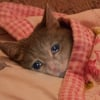
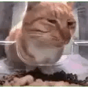
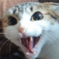
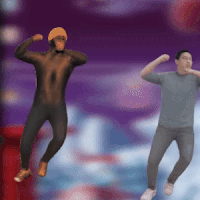
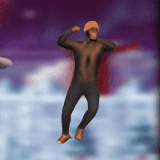
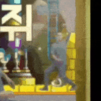

누렁이밥 아녀/?
참치 ㅋㅋㅋ
습식사료 먹고싶다잖아~
참치 ㅋㅋㅋㅋㅋㅋㅋㅋㅋㅋㅋ
참치 각 ㅋㅋ
우리 고양이도 매번 저러다가 츄르인줄 알고 불닭소스에 달려들길래 한번 맛보여줬더니 그 이후로 사료만 먹음



그건 좀;;;;

삐쭉 삐쭉 쭈뼛쭈뼛 쭈왭쭈왑

냥냥냥 쌀쌀쌀


냥이 새끼 졸라 귀엽네 ㅋㅋㅋㅋㅋㅋㅋ
ㅋㅋㅋ귀엽둥이네
내 밥 냄새가 난다옹
털
ㅈ냥이들 지들 좋아하는것도 아니면서 내가 먹고있으면 뭔가 싶어서 달라고 지랄함



고앵이는 왜 울음소리도귀엽냐 ㅋㅋㅋㅋ
치타 울음소리 찾아봐


우리집 고양이 치킨에 자꾸 앵기길래 매운양념 젓가락으로 콕 해서 코에다 살짝 찍어줬더니
혀로 쓱 해서 맛보고 3초간 굳어있다가 괴성을 지르고 구석으로 도망간다음 3일간 내외함
쌀먹하려는 쌀냥이 정상화
냥냥 쌀쌀쌀
왜 버섯모자쓰고 메이플하는 고양이 ai영상이 아닌건데
우리집 애도 사람먹는 참치캔 따면 저지랄남ㅋㅋㅋㅋㅋㅋㅋ 다른 사람 음식은 손도 안대는데
참치 비린내 좋아하더라
사람 음식에 흥미없는 우리 고양이도 가츠오부시 뿌리면 자다가도 튀어나옴. 어디냐 어디서 이런 냄새가 나는 것이냐 하면서 온 집안을 코 킁킁거리며 다님. 미안하다... 그치만 니가 먹기에는 너무 짜 ㅠ
짬타이거 기질이 보이네 ㅋㅋㅋ
참치향기에 미쳐버린www
참치캔 하나 사줘야겠다ㅋㅋ
ㅋㅋㅋㅋ 집사야 니가 먹는것을 나에게도 내놓거라 .... ㅋㅋㅋㅋ
치즈냥이보다 고등어냥이들이 착한거같아
삼색이랑 까망이들이 순함
나만없어고냥이
진짜 졸래 귀엽네 ㅋㅋㅋㅋ
냥커추